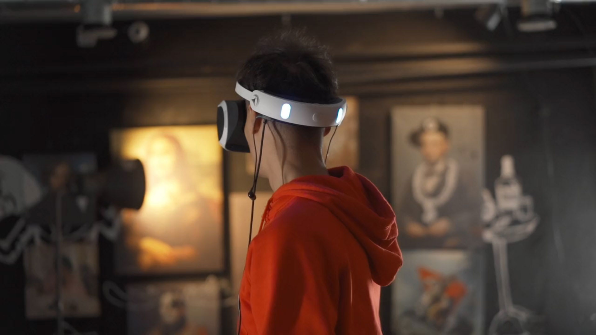
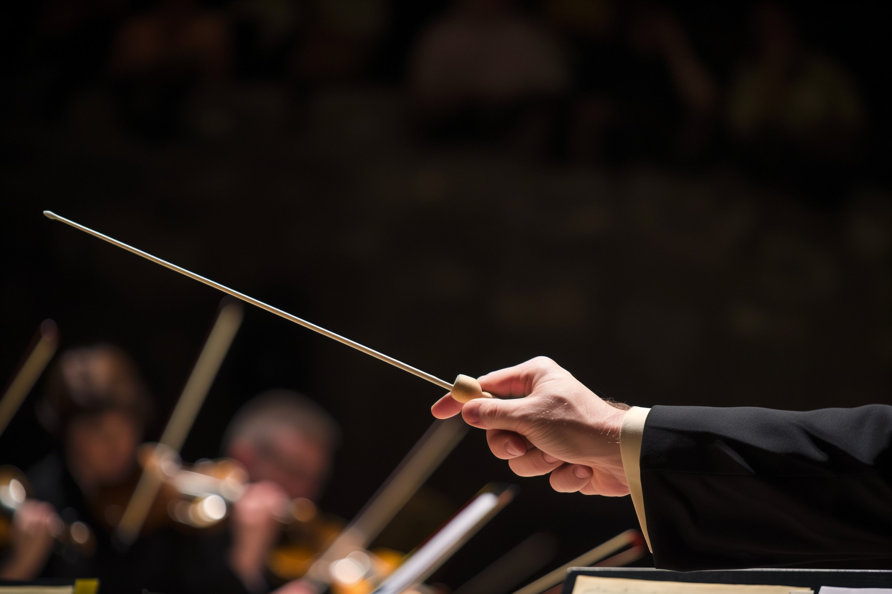
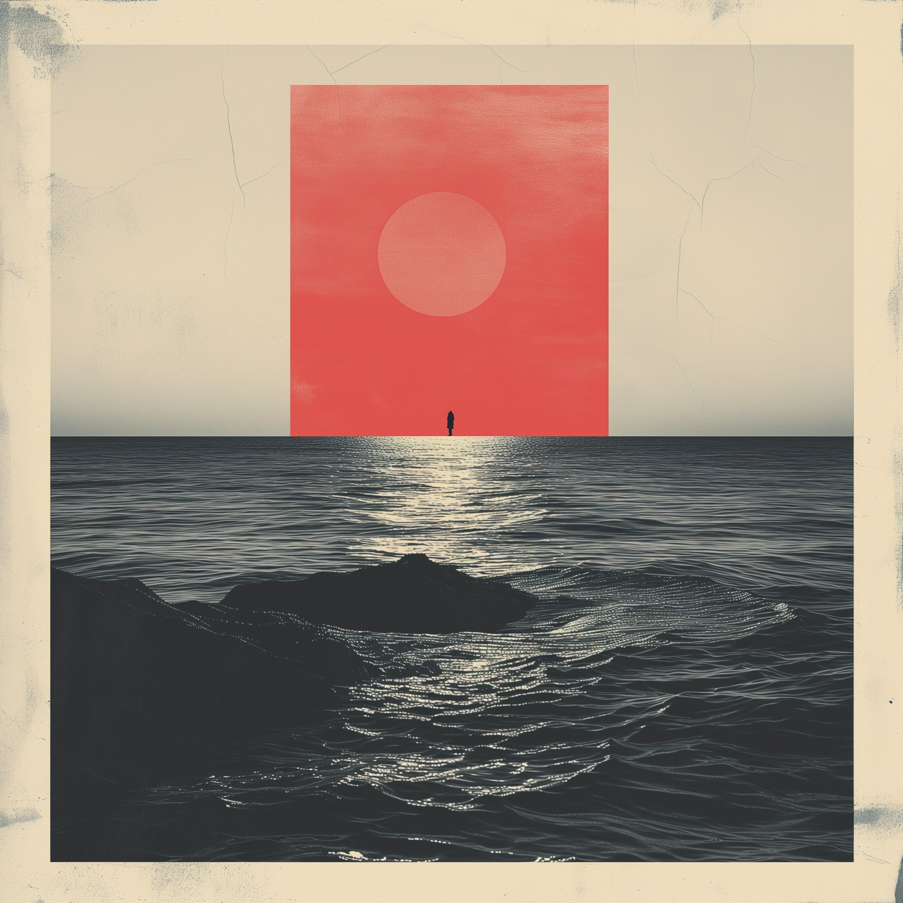
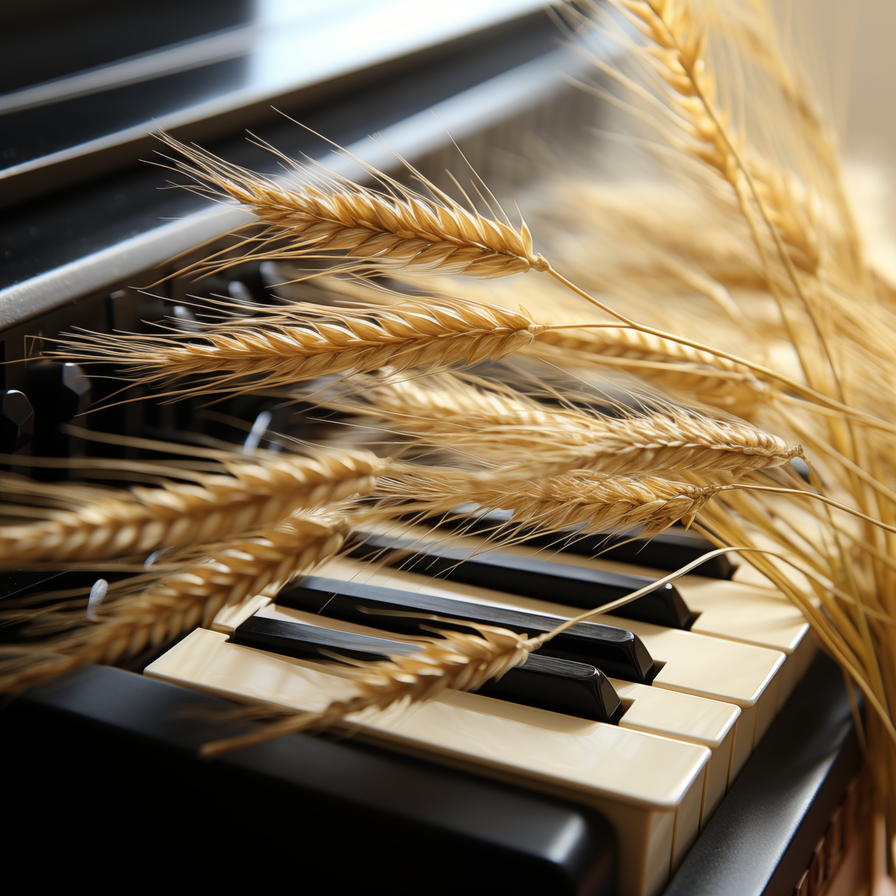
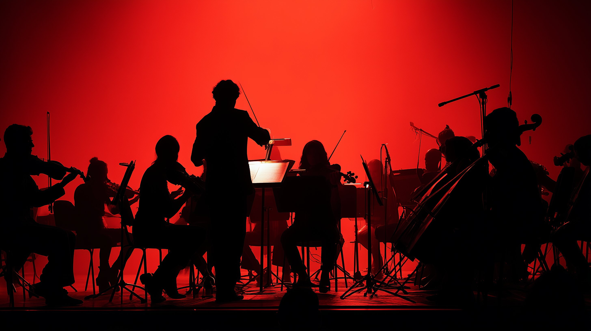
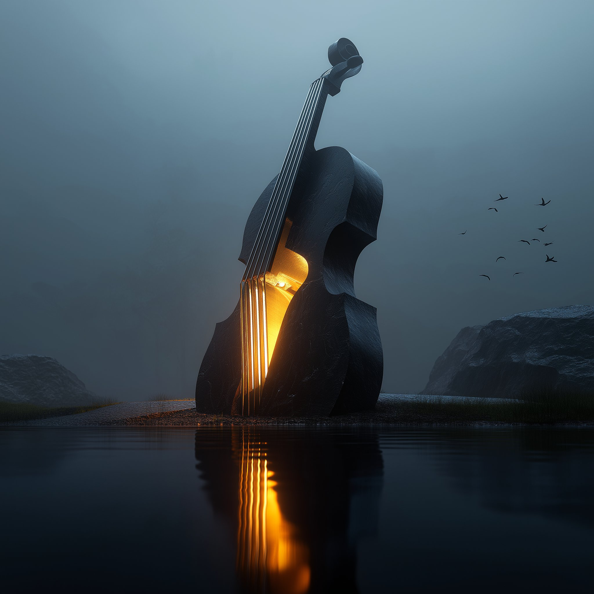
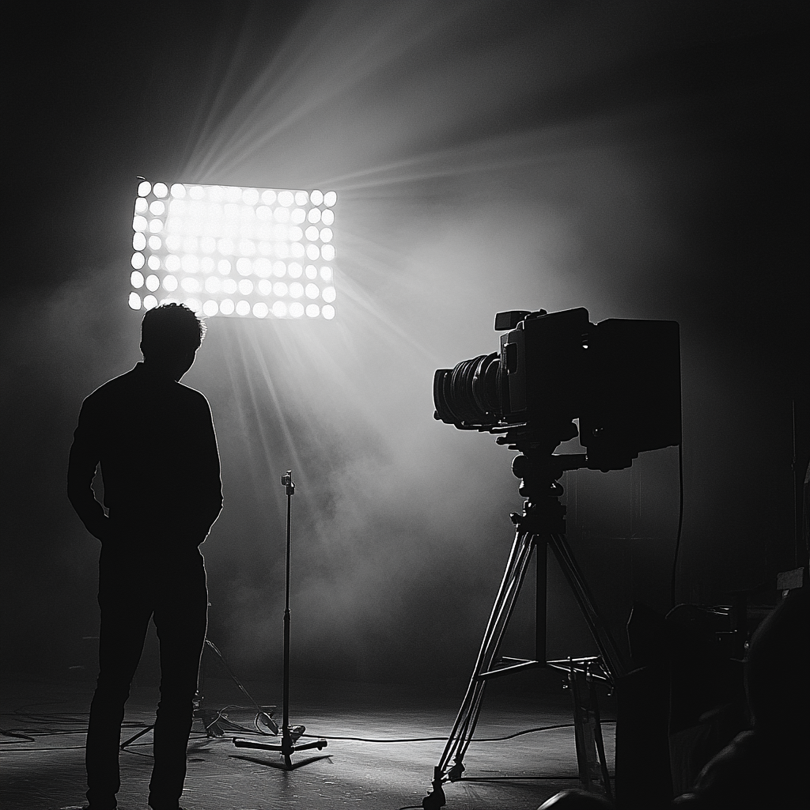

МАРАТ ФАЙЗУЛЛИН
композитор, продюсер
высоких технологий и отраслевого понимания для создания захватывающих впечатлений.
Уникальное сочетание музыкального мастерства,
творческой проницательности и способностью держать руку на пульсе отраслевых тенденций,
специализиция на создании захватывающих музыкальных произведений для кино,
цифровых развлечений и больших событий.

Мой творческий путь
Меня зовут Марат Файзуллин. Я российский композитор, музыкальный продюсер и звукорежиссёр из Башкортостана. Моя карьера — это синтез любви к киномузыке, экспериментов со звуком и преданности родной культуре. За 25 лет творчества я написал музыку к 150 кинопроектам, а в 2023 году отметил серебряный юбилей своей деятельности. Хотя Москва стала моим домом на полтора десятилетия, несколько лет назад я вернулся в Уфу, чтобы совмещать работу в индустрии с продвижением башкирских традиций через современные технологии.
Ранние годы: истоки
Я родился 7 ноября 1982 года в Уфе, столице Башкирской АССР. Музыка вошла в мою жизнь с детства: с 1989 по 1999 год я учился в Средней специальной музыкальной школе при Уфимском государственном институте искусств. Эти годы заложили основу моего профессионального пути — от классической школы до первых творческих поисков.
Моя миссия —
быть мостом
между академической
традицией,
национальным наследием
и цифровым будущим.






-
Как музыка стала моей профессией?
- С детства я слышал мир через ритм и мелодии. Сначала это были уроки в музыкальной школе Уфы, потом — ударные инструменты, которые научили меня чувствовать время. Но настоящий перелом случился в 2000 году, когда я организовал первый в Башкортостане сольный концерт на маримбе. Тогда я понял: звук может не только развлекать, но и рассказывать истории. Так начался мой путь от исполнителя к композитору.
-
Почему я совмещаю фольклор и электронику?
- Башкирские народные инструменты — это голос моей земли. Но я верю, что традиции должны дышать в современном контексте. Курай, звучащий сквозь синтезатор, или горловое пение в ритме техно — это мой способ сохранить наследие, сделав его актуальным. Так рождаются саундтреки, где прошлое и будущее ведут диалог.
-
Что для меня важнее: кино или театр?
- Искусство не делится на «важное» и «неважное». В кино музыка становится незримым персонажем, а в театре — живой материей, которая меняется с каждым показом. Но есть общее: я всегда стремлюсь к тому, чтобы звук не просто сопровождал действие, а раскрывал его скрытые смыслы.
-
Как я работаю с режиссёрами?
- Для меня коллаборация — это алхимия. Сначала я погружаюсь в эскизы, сценарии, даже мудборды проекта. Потом мы с режиссёром ищем «звуковую метафору»: например, в документальном фильме о Русском Севере я использовал звон колоколов, пропущенный через реверберацию, чтобы передать ощущение забвения. Главное правило: музыка должна рождаться из диалога, а не монолога.
-
Зачем я вернулся в Уфу после Москвы?
- Столица дала мне профессиональный взлёт, но Уфа подарила душу. Здесь я нахожу баланс: пишу музыку для международных проектов, но параллельно работаю с местными музыкантами над возрождением башкирского фольклора. Мой центр «Арт-Вектор» — это мост между локальной культурой и глобальным контекстом.
-
Чем я горжусь больше всего?
- Не количеством написанных треков (хотя 150 саундтреков — это серьёзно!), а проектами, где музыка стала социальным жестом. Например, мультимедийный концерт для слабослышащих, где вибрации инструментов передавались через тактильные сенсоры. Или опера, где фольклорные мотивы Башкортостана сплелись с японской эстетикой. Это доказывает: музыка — универсальный язык, который может менять реальность.
МОЯ КОМАНДА
В моей команде не только профессиональные музыканты,
но и специалисты различных профессий.
-
в команде с 2014НАТАЛЬЯ МУКАЕВАГлавный бухгалтер
-
в команде с 2018СЕРГЕЙ РОСЕВАссистент
-
в команде с 2016СОФИЯ ЛОГИНОВААранжировщик
-
в команде с 2021ПАВЕЛ ТИМИРЯЗЕВАрт Директор
-
в команде с 2017АРТУР ХАЛЛИЛОВТехнический Директор
ПАРТНЁРЫ
В своей работе я сотрудничаю с различными компаниями,
брендами и сервисами, чтобы обеспечить максимальное качество конечного результата.


Помимо композиторской работы, я руковожу несколькими проектами.
Музыка — это язык, который объединяет эпохи.
0
ПРОЕКТОВ